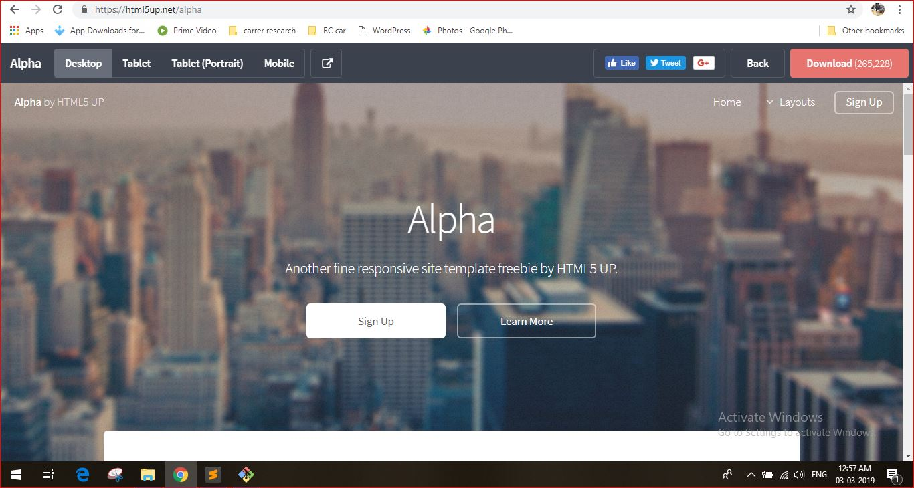
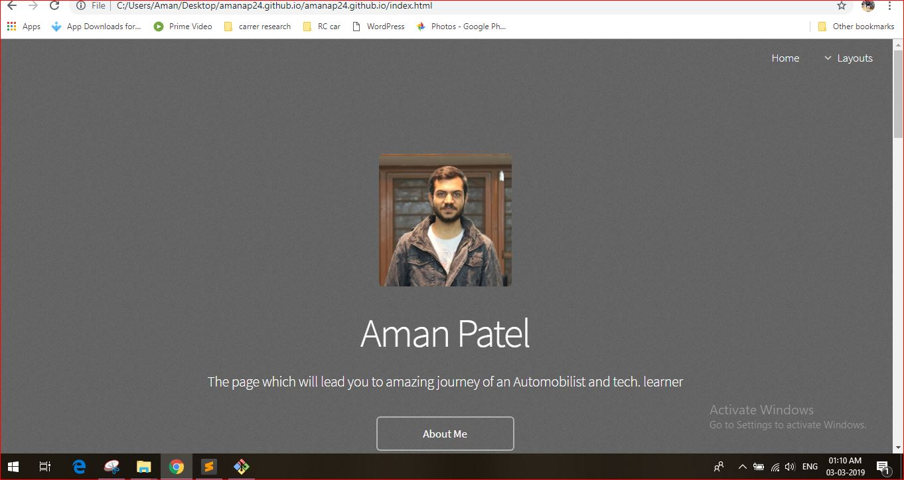
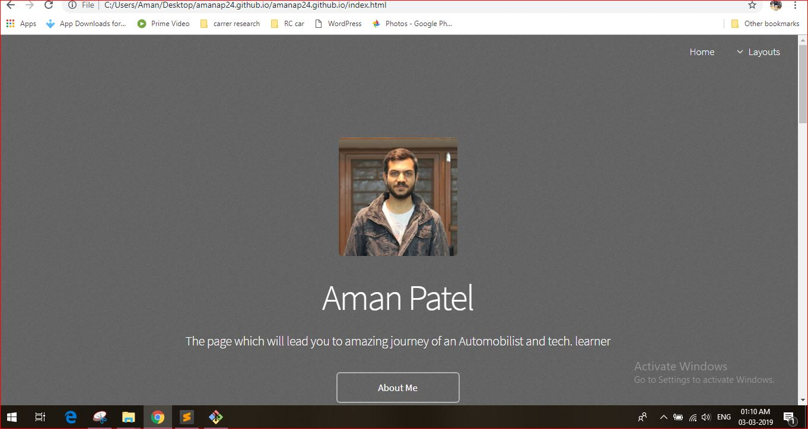
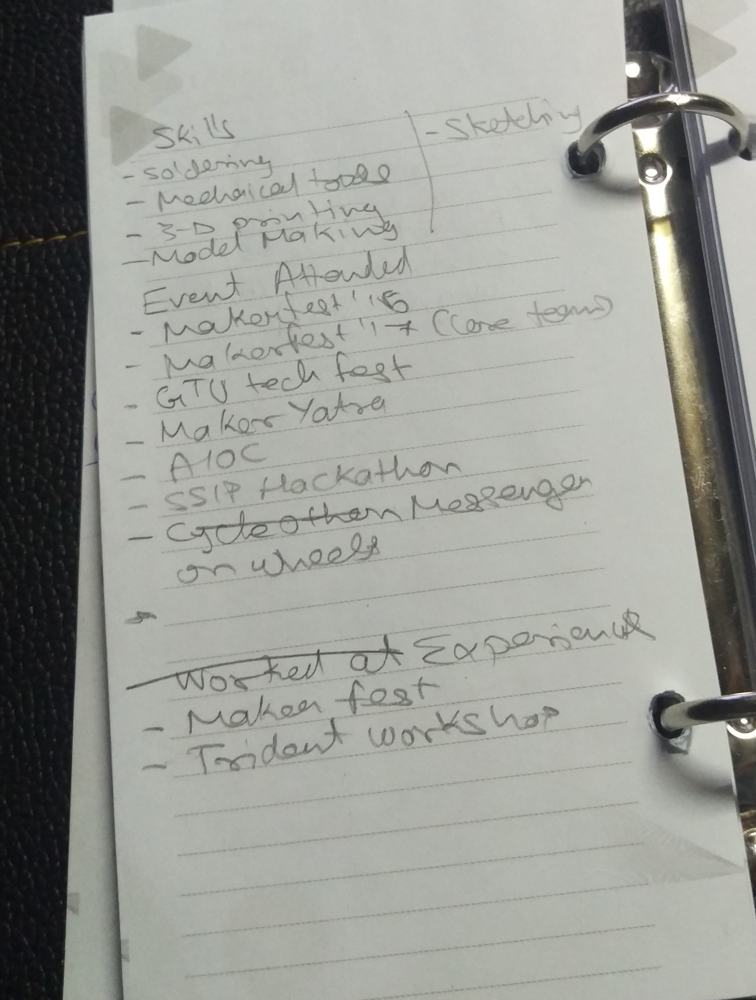

Website Development
A Brief to make your own website
-Our task for this week was to make our own website. -Having a personal website is a great thing by which you can show your work to anyone with a more presentable manner and without any hazzel. You can access it from anywhere. -Here you will get to know all the tools i have used and a direct key to make your website.
Step-1
-First i made my account on github. -Make sure your name in Username is relevent as it will be the same in your website url. -Make a new repository with the same name as that of your Username (username.github.io)Step-2
-Then i downloaded Gitbash and Sublime Text -Created a folder on desktop named as my username. -In Git bash run two commands named: “cd desktop”, “cd ‘folders name' ”. -This will create a folder inside the folder on desktop.Step-3
-Now open your repository and copy the link from clone or download as shown in the image. -Open Gitbash and run the command- cd clone 'copied link' .Step-4
-Then i downloaded the theme of my choice from Html5up.  -Extract the downloaded .zip folder in the folder on desktop. -Cut the files from that folder into the sub folder which was created when you cloned the repository.Step-5
-Started building up my website slowly by replacing the Titles with what i wanted for my site. - If you are not familiar with coding visit W3Schools for basic understanding. And for more i just started editing the template by opening it in Sublime text as shown in image.
-After making few changes as per my need, my website looked something like this.

- If you are not familiar with coding visit W3Schools for basic understanding. And for more i just started editing the template by opening it in Sublime text as shown in image.
-After making few changes as per my need, my website looked something like this.

Step-6
-After getting basic knowledge about designing of page and how to make changes, i listed out things that i wanted on my site and how the layout should look. 